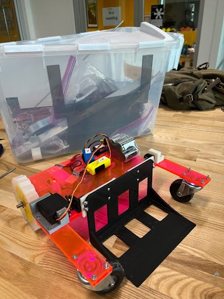

Approach
With limited time, materials and experience, we chose simplicity, reliability and mobility: a low-CG plow with rear-wheel drive, caster wheels for quick turns, and a servo-driven scoop. I helped size torque for climbing the ramp and pick wheels for traction. The gearbox came out of an electric screwdriver.
We used laser cutting, milling, 3D printing and silicone molding. The robot was reliable and quick in seeding, and we left out storage to keep it nimble. Built with Jack Shea and Emma-Kate Price.

